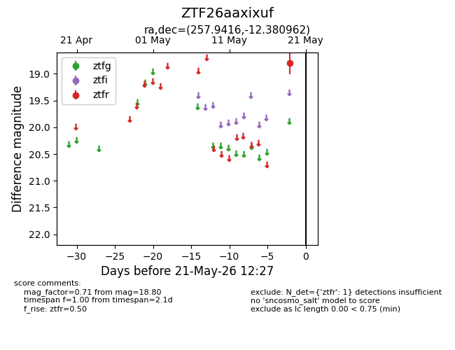
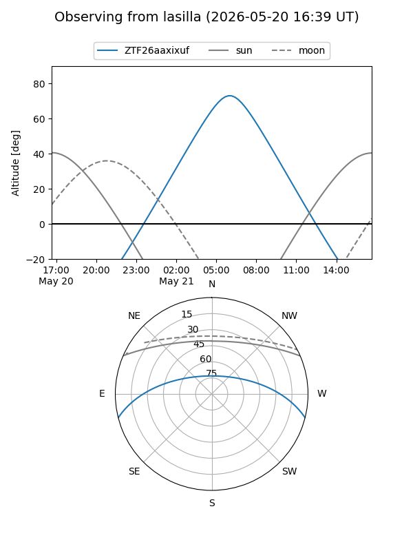
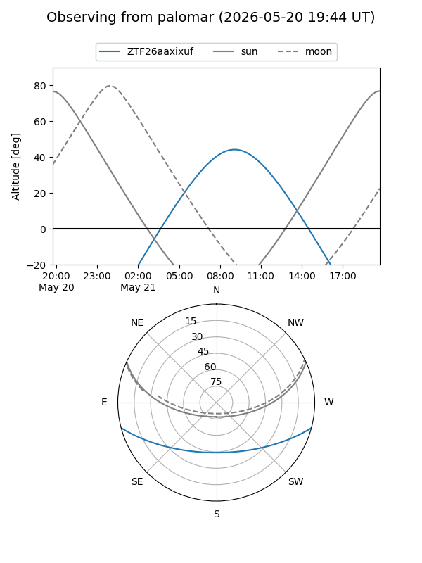

ZTF26aaxixuf
Target ZTF26aaxixuf at 2026-05-21 12:29
Aliases and brokers:
lsst-FINK: link
lsst-Lasair: link
lsst-ALeRCE: link
ztf-FINK: link
ztf-Lasair: link
ztf-ALeRCE: link
alt names
ZTF26aaxixuf (ztf,fink_ztf)
Coordinates:
equatorial (ra, dec) = 257.9416,-12.38096
equatorial (HMS+DMS) = 17:11:45.97,-12:22:51.46
galactic (l, b) = (9.7972,+15.57390)
Flags:
Photometry:
last ztfr=18.80
1 ztfr detections
Lightcurve

Visibility


Additional plots